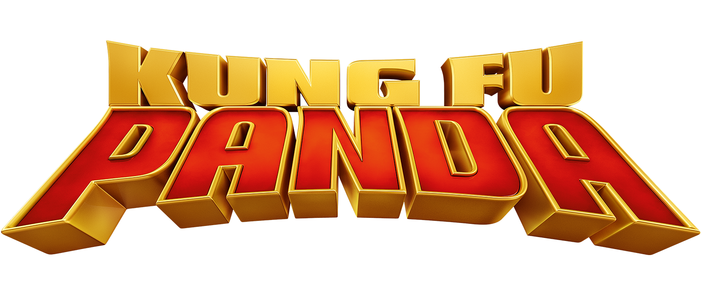

Top Recommended Films: Shrek Quadrilogy
The Shrek Quadrilogy focuses on Shrek, an Ogre who spent most of his life alone, feared by humans and most people who meet him. The first film then shows Shrek meeting Donkey and going on an adventure to save a princess and get his swamp back from a tyrannical dictator. Then, in a twist on most fairy tale stories, Shrek and the princess Fiona end up falling in love, breaking the status quo and showing that normal standards of "beauty" mean nothing in love.
The second film then builds off of this start in order to expand and continue the story in a logical way. After falling in love and getting married comes meeting and being accepted into the family. However due to the evil schemes of the Fairy God Mother, Shrek has to fight and show he'd do anything for his wife.
The third film then starts off with Fiona's father, the King, dying and leaving Shrek to rule in his place. Since Shrek spent his entire life thinking he was a monster, he doesn't feel he can rule so he sets off to find the next heir. However as he leaves, he finds out that Fiona is pregnant and he is left to contemplate how good a Father he would be.
Finally, Shrek 4 starts with Shrek making a huge mistake in anger, signing his happy life away for one day of freedom. This brings us back to the original roots of the series, allowing us to witness Shrek and Fiona fall in love again, while also allowing Shrek to relise how amazing his life is.
Overall, the Shrek Quadrilogy shows us the story of someone who thought he was a monster his whole life, realising that he isn't a monster and falling in love which then leads to him having his own happy family, showing that no matter how you look or were born, you deserve happiness. Along with the fact that every film in the quadrilogy is the next logical step in Shreks story, this is why Shrek is the most recommended film series.

Kung Fu Panda Trilogy
The Kung Fu Panda trilogy revolves around Po, a panda with no special talents that is also a huge Kung Fu fanboy. Then, one day, Po is chosen to be the "Dragon Warrior", the Kung Fu master that will bring peace to all of China. The first film then shows Po learning to believe in himself and become a true Kung Fu master.
The second film then continues off of this by bringing in a new Villain that knows something about Po's past. This film then answers many questions the viewer may have had about Po from the first film such as "Why is he the only panda? WHere is he from?".
The final film then shows Po finally fulfilling the prophecy of saving China from its greatest threat yet, along with him meeting his real father. All of these films follow off of each other logically and consistently which is why this series is recommended.
Avengers: Infinity War and Avengers: Endgame
Avengers: Infinity War is the first part of a two part culmination of 10 years of buildup over 20 films. This ambitious crossover of many film series is recommended as it breaks the usual trope of the heroes always winning by having the powerful villain win in the end. This left a strong impact on fans of the series as its the last thing you'd expect from a superhero movie.
Avengers: End Game is the second part to hte culmination which shows one of the most epic climaxes to a film series with dozens of your favourite Marvel heroes coming together, along with a satisfying end to many characters in the series.
This two part adventure is recommended due to how ambitious it was and how well executed it is.